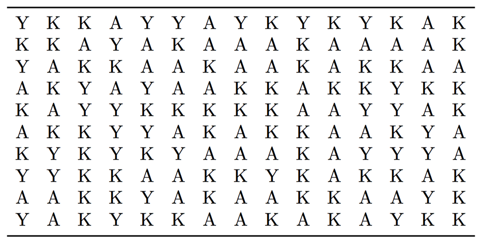

Chapter 8 Word Puzzle

An evil word puzzle is a puzzle game where you have to find a special word. The whole puzzle consists solely of letters from within the word itself and does sometimes not even include the word you are looking for.
8.1 Requirements
evilpuzzle() that generates an evil word puzzle (optionally with or without the word) and make sure that every word with at least 3 letters can be used to generate a puzzle with desired but meaningful dimensions.
8.2 Solution
Let us start to solve the Excercise by generating a matrix full of letters from the desired word. We can easily do this using the sample()-command. If we want to fill the matrix one by one we can do this easily with two nested for-loops we just discussed, but the matrix()-command is much faster and the better option here.
word <- c("K","A","Y","A","K")
cols <- 15
rows <- 10
# Generate word matrix with loops (very inefficient and slow!)
mat <- matrix(NA,nrow=rows,ncol=cols)
for ( idx in 1:rows) {
for (jdx in 1:cols) {
mat[idx,jdx] <- sample(word,size=1)
}
}
# Generate word matrix vectorized (the way to go!)
mat <- matrix(sample(word,replace=T,size=rows*cols),
nrow = rows,
ncol = cols)We now have the matrix mat that contains letters from our word KAYAK in totally random order. The bigger the matrix gets via the cols and rows arguments the more likely is it that it contains the word itself up to a few times. Therefore, we have to check for that and correct this when necessary.
Logically there are a couple of approaches to solve the task of controlling if mat contains our word more often and of course it is possible to directly check for this while generating the matrix. Another option is to decompose the matrix by rows and columns and check if the resulting and/or the reversed string contains our word. A more loop-based solution is going through the letters one by one and check if starting with the actual position the word can be found either horizontally, horizontally reversed, vertically or vertically reversed. Every time the word is found, the corresponding part is replaced with new random letters drawn from the word. As we can not be sure that we have not accidentally created the word by replacing the letters in an earlier position we have to go once again through the matrix after finishing our first iteration so that we can be sure that the word is not included anymore. So our first step towards the solution is to create a complete word free matrix. Using loops this can be translated in two nested for-loops running through rows and columns of mat and a while-loop that encapsulates the nested loops and takes care of starting over when we have replaced the occurring word in the matrix. In this case, our skeleton looks like this:
check <- TRUE # Make sure the while loop is entered
while ( check == TRUE ){
check <- FALSE # Assuming one iteration is enough we can leave the
# loop after the current iteration.
for ( row in 1:nrow(mat)){ # Loop running through rows
for (col in 1:ncol(mat)){ # Loop running through columns
# Code to solve the actual problem!
} # End for (columns)
} #End for (rows)
} #End whileWith that basic setup we run through the entire matrix one element at a time. We can easily adress the element using the running variables row and col from the for-loops using them as indices in brackets. Depending on the word length we can now calculate which submatrix of mat has to be checked for our word. Namely these areas are the following ones:
# Obtain ranges to check for the word
mat[row,col:(col+length(word)-1)] # Horizontal (left to right)
mat[row,(col-length(word)+1):col] # Horizontal reverse (right to left)
mat[row:(row+length(word)-1),col] # Vertical (top to bottom)
mat[(row-length(word)+1):row,col] # Vertical reverse (bottom to top)As it makes sense not to wrap everything in if-else-clauses we can simply put the indices which we have to check in lists and use them out of another loop to compare them with the actual word. Wrapping them in a list so that we can dynamically address them is easily done like so:
rows <- list(row, # List for row indices
row,
row:(row+length(word)-1),
(row-length(word)+1):row)
cols <- list(col:(col+length(word)-1), # List for column indices
(col-length(word)+1):col,
col,
col)Now we can loop through the list entries and perform our comparison and then act accordingly, which can easily be done by using an if-clause and checking if the submatrix we are looking at is identical with our word. Sadly this is not enough. As we dynamically calculate the indices for the submatrix when using our lists rows and columns we have not yet checked if the indices exist. For example, when looking at the top left element in the matrix (mat[1,1]) we can not check if the indices from bottom to top and from right to left correspond to our word, because these indices do not exist and are negative numbers in our list. In this case, R responds with an error:
#R> Error in mat[1, (1:-5)]: only 0's may be mixed with negative subscriptsThe same happens when we look at the bottom right element of the matrix and try to examine the cases horizontally and vertically as these do not exist. That means before overwriting an occurrence we have to check for 5 things.
- Are all calculated row indices bigger than zero and really in the matrix?
- Are all calculated column indices bigger than zero so that they can really be addressed?
- Are all calculated row indices smaller than the maximum row-dimension of the matrix and therefore not out of
mats boundaries? - Are all calculated column indices smaller than the maximum column-dimension of the matrix so that they are really present in the matrix?
- Does the submatrix equal the word we are looking for?
Due to the properties of the &&-Operator, we can perform all these comparisons in one if clause including the check if the submatrix equals the word. Even though the indices in the matrix do not exist in the matrix (be sure to understand why this does not work with the single AND operator (&) which leads to the following code including the overwriting with a fresh randomly selected set of letters from our word:
for ( idx in 1:length(rows)){ # Could have used length(cols) instead
# If all rows and cols are in matrix and not out of bound and
# the range equals the word resample this section of the matrix.
if ( all(rows[[idx]] > 0) && # Check 1
all(cols[[idx]] > 0) && # Check 2
all(rows[[idx]] <= nrow(mat)) && # Check 3
all(cols[[idx]] <= ncol(mat)) && # Check 4
identical(mat[rows[[idx]], cols[[idx]]],word)) { # Check 5
# Overwrite the submatrix with fresh sampled letters
mat[rows[[idx]],cols[[idx]]] <- sample(word,
replace=T,
size=length(word))
# After replacing we have to check the whole matrix again,
# there we make sure to reenter the while loop!
check <- TRUE
# Feature to count how many occurrences have been replaced
wordcounter <- wordcounter + 1
} #End if
} #End forWhen the while-loop has terminated we are left with a clean matrix that surely does not contain our word in the checked dimensions. If you want to be really evil you can printout the puzzle, give it to some friends and let them search for the word. If you only want to create a hard puzzle you can choose a random location to overwrite the letters there with the word.
All that’s left to do is wrapping the existing code in a function with the requested name evilpuzzle(). If you want to improve the routine a little bit and make it more flexible you can implement some switches using if-else-clauses to control if the puzzle should be evil or super evil, meaning containing the search word or not and after placing the word within mat crosscheck if that only leads to a single occurrence and cannot be assembled into multiple hits when trying to solve the puzzle. If that is not enough you can also implement checking for diagonal occurrences of the word. The function corresponding to the exercise after assembling the discussed bits may look like this:
evilpuzzle <- function(word = c("T","E","S","T"),
cols = 15,
rows = 10,
inclword=TRUE) {
# Check if provided word is longer than 3 characters
if ( sum(nchar(word)) < 3 ) {
stop("The provided word has to be longer than 3 characters!")
}
# Initialize
wordcounter <- 0
# Generate word matrix vectorized
mat <- matrix(sample(word,replace=T,size=rows*cols),
nrow = rows,
ncol = cols)
check <- TRUE # Make sure the while loop is entered
while ( check == TRUE ){
check <- FALSE # Assuming one iteration is enough we can leave the
# loop after the current iteration.
for ( row in 1:nrow(mat)){ # Loop running through rows
for (col in 1:ncol(mat)){ # Loop running through columns
rows <- list(row, # List for row indices
row,
row:(row+length(word)-1),
(row-length(word)+1):row)
cols <- list(col:(col+length(word)-1), # List for column indices
(col-length(word)+1):col,
col,
col)
# <-- Indent removed for better overview outside of IDE!
for ( idx in 1:length(rows)){ # Could have used length(cols) instead
# If all rows and cols are in matrix and not out of bound and
# the range equals the word resample this section of the matrix.
if ( all(rows[[idx]] > 0) && # Check 1
all(cols[[idx]] > 0) && # Check 2
all(rows[[idx]] <= nrow(mat)) && # Check 3
all(cols[[idx]] <= ncol(mat)) && # Check 4
identical(mat[rows[[idx]],cols[[idx]]],word)) { # Check 5
# Overwrite the submatrix with fresh sampled letters
mat[rows[[idx]],cols[[idx]]] <- sample(word,
replace=T,
size=length(word))
# After replacing we have to check the whole matrix again,
# therefore we make sure to reenter the while loop!
check <- TRUE
# Feature to count how many occurrences have been replaced
wordcounter <- wordcounter + 1
} #End if
} #End for
# <-- Indent removed for better overview outside of IDE!
} # End for (columns)
} #End for (rows)
} #End while
# Message to the user how often the word has been replaced
cat("The word", paste(word,sep="", collapse=""),
"was replaced", wordcounter, "times! \n" )
# Add word to clean matrix if desired (only horizontally)
if ( inclword == TRUE) {
row <- sample(1:nrow(mat),size=1)
col <- sample(1:(ncol(mat)-length(word)),size=1)
mat[row,col:(col+length(word)-1)] <- word
}
# Return the finished matrix to the user
return(mat)
} #End functionThe function evilpuzzle() now suits the desired needs and is a promising candidate to fulfill the needs described in the exercise. However, there is much room for improvement as the program only supports inserting the word horizontally and as it does not support inserting it differently the user is not able to select in which way it should be represented in the matrix. As stated before the chosen approach is not very efficient as the word is compared with the submatrix for all four orientations and for every element in the matrix. Further following improvements are left to the user:
- The performed comparison of the submatrices with the word is not necessary for every element of the matrix. If the element we are looking at in a certain iteration does not equal the first letter of
wordthere is no need to compare the whole submatrices. Therefore we can implement such a simple test to improve the efficiency of our program. - One major flaw of the program is that the word (if inserted in the matrix), is only inserted horizontally. The optimal solution would allow the user to select between inserting it at a random or desired orientation either horizontally, horizontally reversed, vertically or vertically reversed. A bonus would be to make the selection of the orientation of the words also random to allow a user to generate a puzzle for themselves.
- Right now the program only supports searching vertically or horizontally word occurrences and ignores the option of diagonal combinations. Therefore more checks can be implemented to make the puzzle even harder. The four diagonal cases should also be considered in the options for inserting the word in the matrix.
- Inserting the word in the matrix can lead to multiple possible combinations. Therefore a control mode should be programmed that counts the occurrences in the matrix and corrects multiple occurrences in a suitable way so that the word can only be found once in the final puzzle.
- There are many other and much more efficient ways to solve this exercise - we just have thrown together what we learned so far. If you can not get enough you can try generating the word puzzle in a totally different way, the string section can solve as source as inspiration.
After this little exercise, you should have a good feeling of how loops and conditional expression can be used to actually do something (more or less) productive and you should have beaten the concepts we just discussed.